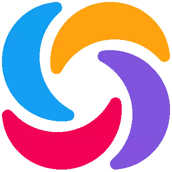

Hello, I'm
A Self-Learned Web Developer
I'm a Self-Learned Web Developer.
I had been curious to know what's going on inside a computer and about the software that makes them live.
It made me to select a course on Information Technology in bachelor's degree.
Even though I studied about Information Technology in degree,
my interest in programming was expanded when I encountered
BROTOTYPE,
a youtube channel lead by Mr. Nikhil Kilivayil and his team. This channel influenced me a lot.
It guided me to become what I am today.
Besides brototype, there are so many youtube channels that also helped me to become a developer.
Along with
YouTube;
Google,
stackoverflow,
MDN Web Docs,
sollearn,
w3schools
etc. are also a helpful learning sources to an autodidact person like me.
As a base language, I am focusing on JavaScript. On my learning path, I have acquired skills in HTML, CSS/SCSS, JavaScript, ReactJS, Git. Following these basic subjects I made a good understanding of other dependent frameworks and libraries like Bootstrap, Materialize, Redux, JQuery and also database knowledge in Firebase.
A static web page (sometimes called a flat page or a stationary page) is a web page that is delivered to the user's web browser exactly as stored,
in contrast to dynamic web pages which are generated by a web application.
Consequently, a static web page displays the same information for all users, from all contexts,
subject to modern capabilities of a web server to
...read more
React (also known as React.js or ReactJS) is a free and open-source front-end JavaScript library for building user interfaces or UI components. It is maintained by Facebook and a community of individual developers and companies. React can be used as a base in the development of single-page or mobile applications. However, React is only concerned with state management and rendering that state to the DOM, so creating ...read more